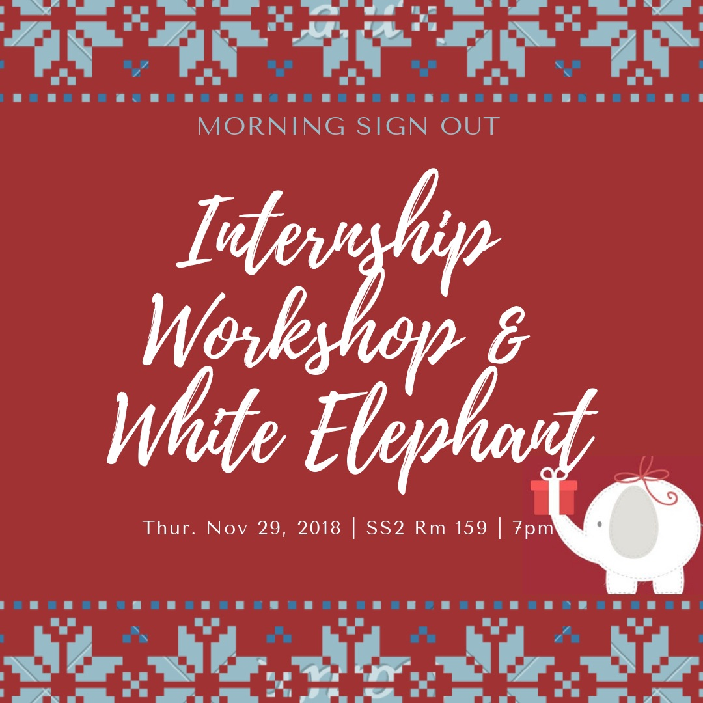

What is Morning Sign Out? Morning Sign Out (MSO) is a UC wide club created to provide anyone interested in science, or pursuing a medical-related career, with resources to help them get the most out of their college experience.
MSO also strives to bridge the gap between the science community and that of the general public. One way we try to accomplish this is by writing articles to simplify hard to understand science, so someone without a strong science background can really comprehend current, relavent science topics.

Upcoming Events!
Monday November 26th is when we're having our second boba fundraiser! This time we're selling Tpumps in front of S&E. The flavors are mango passionfruit milk tea, and guava peach green tea both with boba. The prices are 1 for $5 and 2 for $9. Swing by for some yummy boba!

On Thusday November 29th we'll be having another workshop! This one we'll be focusing on internships for summer that y'all can apply for. We're also planning on doing a white elephant event! If you would like the participate, please bring a wrapped gift (~$5-$10 worth)! See you at the workshop :)
